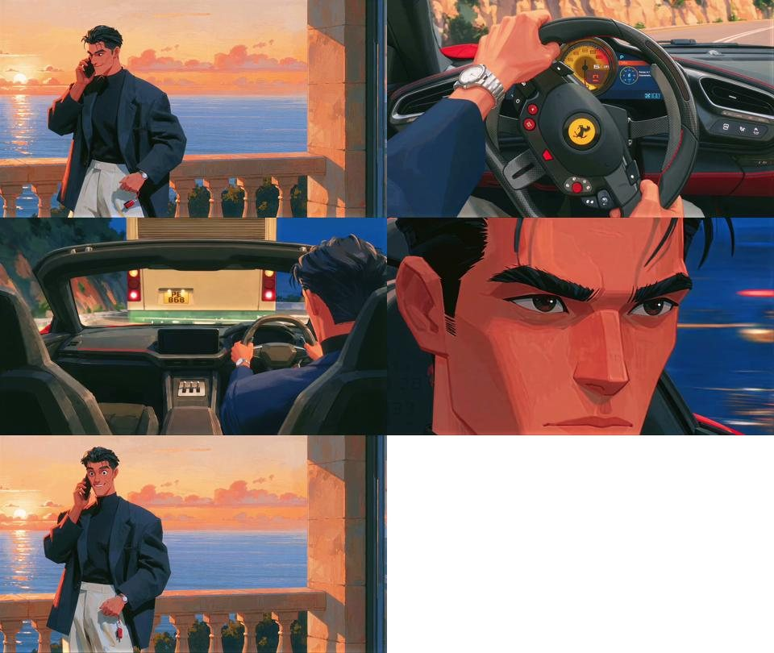
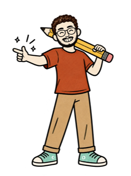
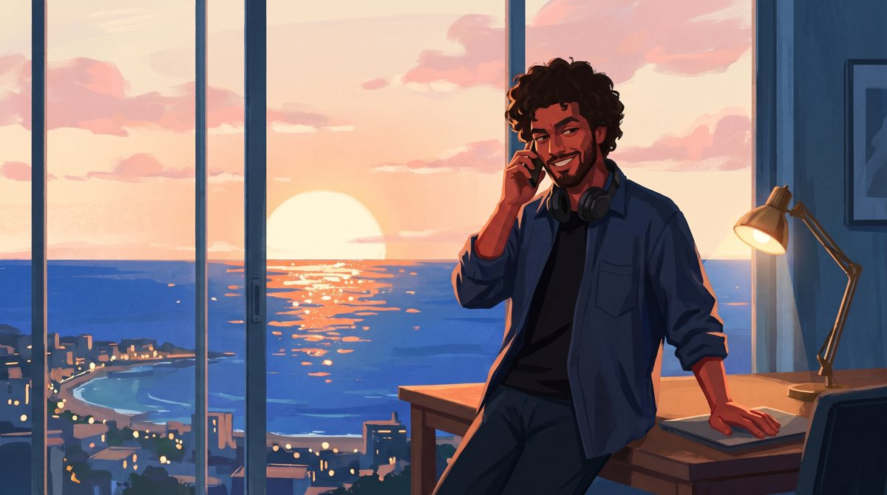
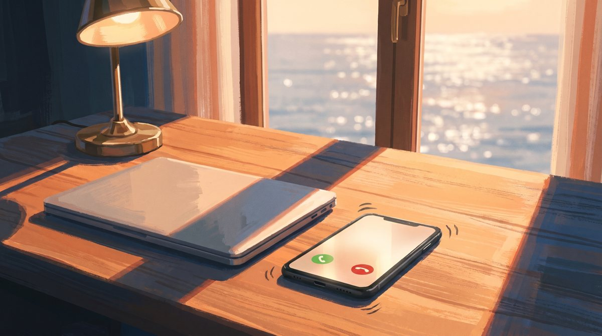
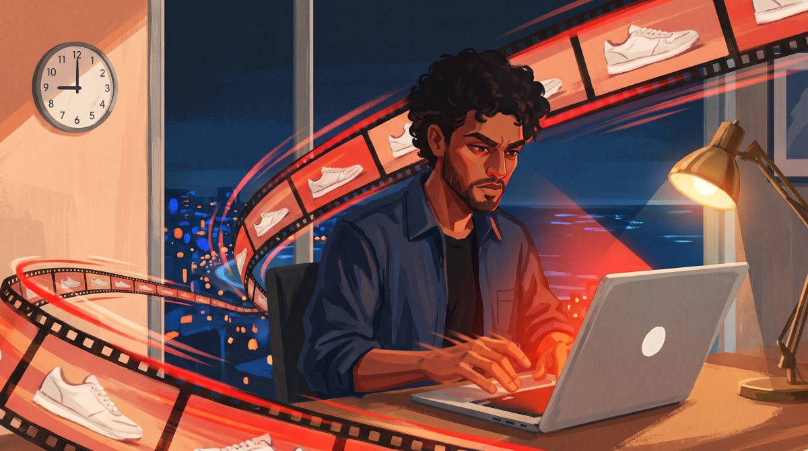
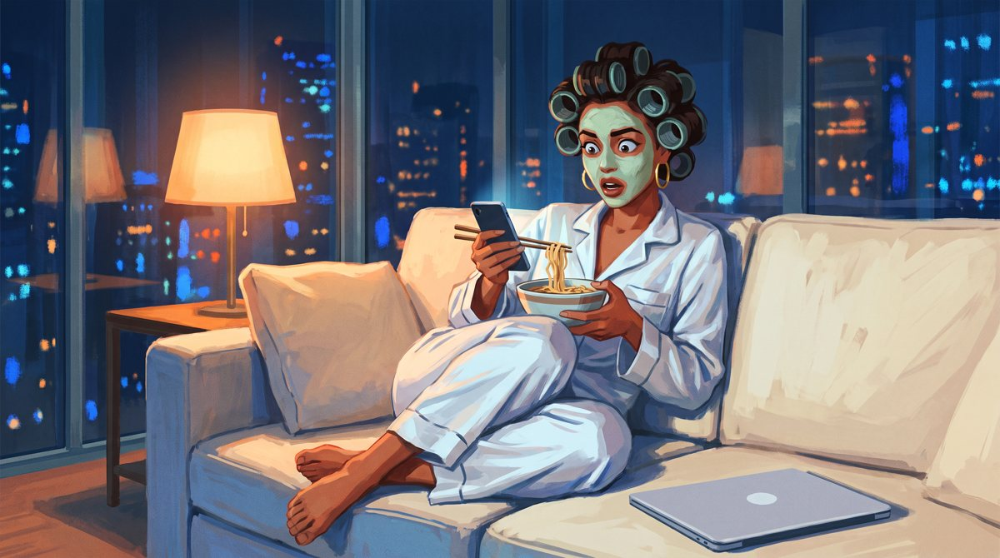
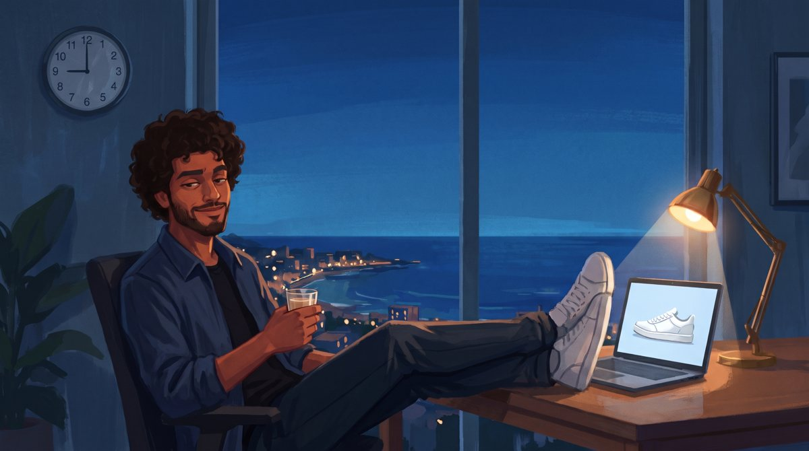
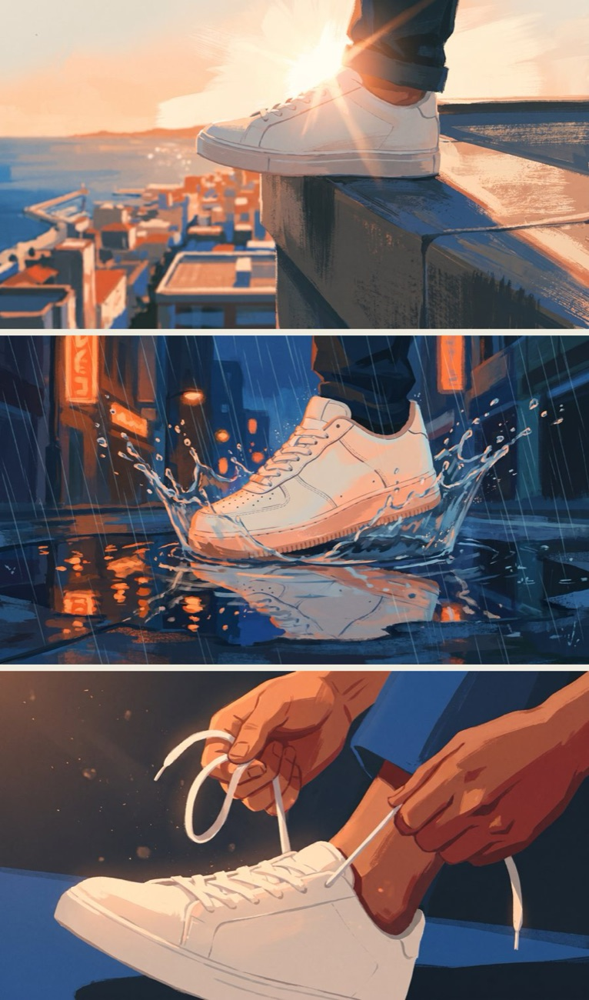

@theabhaychopra
@theabhaychopraWhat you need
- Higgsfield (higgsfield.ai) — everything below runs inside it
- Nano Banana Pro in Higgsfield for the stills — free on my plan's Unlimited mode, 2 credits a still without it
- Kling 3.0 in Higgsfield for the motion and the voices — about 10 credits for 5 s with sound on
- Voice change in Higgsfield — 1 credit a clip, keeps each voice the same in every scene
- An editor for the cut — CapCut, Premiere, or ffmpeg (free, ffmpeg.org)
The whole 35 s film came to about 90 credits (prices checked 12 Nov 2026): 7 Kling clips at 7.5–14 each, 5 voice changes at 1, a few stills at 2, three short voice lines at 0.3. Every character, voice and frame is AI.
Make a style sheet
Pick a film whose look you love. Grab 5 frames from it — a wide shot, a close-up, day and night — and put them in one image. That one image goes into every still as image 1, for style only.

I attached a photo of myself to keep my face. It pulled the drawing back to a generic cartoon every time. Describe your lead in words instead (hair, beard, skin, clothes) and let the style sheet do the look.
Paint the first frame

Every still uses the same 3 parts: the style-only opener, the scene, and the style paragraph. Nano Banana Pro, 16:9, 2K. Paste the style paragraph at the end of every prompt in this guide.
Use the attached image 1 as a style reference only. Match its rendering, color palette, lighting and brushwork exactly. Do not copy its character, pose or composition. Create new characters. Scene: Golden hour in a high-rise apartment studio above a coastal city, 16:9 medium-wide shot. A tall floor-to-ceiling window fills the background: the low sun sits on the horizon and lays a glittering orange path across a deep cobalt sea, soft pink and peach clouds drift through the sky, and the first city lights glow along the shore. A man in his late twenties leans back against the edge of a wooden desk, phone pressed to his ear, the other hand resting on a closed laptop beside him. He has full dark curly hair in chunky clumped shapes, a short full beard and warm brown skin. He wears a loose navy overshirt over a black t-shirt, with black headphones resting round his neck. His mouth shows a confident, amused grin, as if he just heard something he finds easy. A warm brass desk lamp glows beside him. Warm rim light on him, cool blue shadows in the room.
Style: Painterly 2D animation still with a gouache and acrylic texture and visible dry-brush strokes on every surface, skin included. No black outlines: forms are defined by flat shapes of color meeting. Faces are built from angular, sculpted planes, with faceted nose, cheekbones and jaw. Warm terracotta skin tones with deep red-brown shadow planes. Thick dark eyebrows, almond eyes with heavy upper lids, realistic adult proportions, not big-eyed anime. Hair in chunky clumped shapes with cool blue-black highlights. Limited palette of burnt orange, peach, cream, cobalt blue and charcoal navy. 1980s Riviera luxury mood. Cinematic storyboard composition, subtle paper grain. No text, no logos, no watermark.
Shot 1, the call

Keep every still you like — each one becomes the start image for a moving shot in Step 4.
The phone rings
The opening phone shot uses the same recipe with frame 1 as image 2, so the desk, laptop and light match:
Use the attached image 1 as a style reference only. Match its rendering, color palette, lighting and brushwork exactly. Image 2 shows the room: keep the same wooden desk, the same closed silver laptop with a plain lid, the same brass desk lamp and the same golden-hour light from the tall window over the sea. Scene: a 16:9 close-up on the wooden desk. A black smartphone lies face up next to the closed laptop, its screen lit with an incoming call: a plain glowing screen with a round green answer button and a round red button, no words, no names, no numbers. Small painted motion lines around the phone show it buzzing. Warm orange sunset light across the desk, cool blue shadows, the sea glittering softly out of focus through the window. Nobody in the shot. + the style paragraph

Lock the set
My first tries had a second laptop, three monitors and a different desk. The fix: attach frame 1 as image 2 and paste the set into every prompt, word for word.
Use the attached image 1 as a style reference only. Match its rendering, color palette, lighting and brushwork exactly. Do not copy its characters, poses or compositions. Image 2 is our film's previous shot: keep the SAME man (same face, full dark curly hair, short beard, warm brown skin, navy overshirt over a black t-shirt) and the SAME room and desk from image 2. The set, identical in every shot: one wooden desk in front of a tall floor-to-ceiling window over the sea and a coastal city; on the desk exactly ONE silver laptop with a plain lid (no logo, no apple), a brass desk lamp on the right, a dark office chair; a round wall clock on the wall to the left of the window. There are NO other screens, monitors or computers anywhere.
Scene: Blue-hour evening, 16:9 medium close-up. The man now sits in the chair at that same desk and lifts the lid of that one laptop open with both hands; its cool white-blue glow lights his face from below, eager focused grin. The wall clock clearly shows 9:00. Through the window the sky is deep cobalt with a last band of orange at the horizon and city lights along the shore. The brass lamp glows warm. Warm rim light, cool blue shadows. + the style paragraph
Frames 3, 4 and 5
Frames 3 and 5: the opener with image 2 + the set + the scene + the style paragraph. Frame 4 is a new character, so it uses the plain opener (image 1 only).
Scene: Night, 16:9 dynamic low-angle shot full of speed. The man sits at that same desk leaning into that one open laptop, typing fast, intense focus. The laptop screen blazes red-orange like a sports car dashboard and lights his face. Painted frames of a white sneaker advert (an original made-up sneaker with no swoosh or brand mark) stream out of the laptop screen and arc around him like a flying film strip, with red light trails and speed streaks. The wall clock shows 9:06. Through the window the night city glitters in cobalt and orange dabs; the brass lamp glows warm.
Scene: Night in a high-rise apartment with a glass wall, 16:9 medium shot with comedic timing. A woman in her late twenties, the founder of a small sneaker brand, sits curled on a big cream sofa in white silk pyjamas. She has a sleek short black bob and gold hoop earrings; a pale green clay face mask covers her face and her hair is wound in big rollers. She holds a bowl of noodles, chopsticks frozen halfway to her mouth, and stares wide-eyed in shock at her phone glowing on her knee. Her laptop sits closed beside her. A warm lamp glows on the side table; through the glass wall a glittering night city spreads out in cobalt and orange dabs. Warm rim light on her, cool blue shadows.
Scene: Deep blue night, 16:9 medium-wide shot. The man leans back in the dark office chair with both feet up on the same wooden desk, next to that one open laptop, whose screen shows the finished white sneaker advert (an original made-up sneaker, no swoosh, no brand mark). He holds a small glass of milky chai and gives the viewer a relaxed, smug half-smile. The wall clock shows 9:10. Warm brass lamp light on him, cool blue shadows, the night city sparkling through the tall window.
One room, one look

The reveal, the punchline


Shot one, two, three
The three ad shots he names in the run. Style sheet as image 1, no image 2, a made-up sneaker with no logo.
Scene: a cinematic sneaker ad shot, 16:9 low-angle close-up. One plain white low-top sneaker with no logo stands on the edge of a city rooftop at golden hour, the sun flaring behind it, a coastal city and the sea far below in soft painterly blocks, warm orange rim light on the shoe, cool blue shadows.
Scene: a cinematic sneaker ad shot, 16:9 ground-level close-up at night in the rain. One plain white low-top sneaker with no logo splashes down into a puddle on a wet city street, a crown of water droplets bursting around it, neon city lights reflected as orange dabs in the puddle, slanting rain streaks, cool cobalt blue night with warm orange highlights on the shoe.
Scene: a cinematic sneaker ad shot, 16:9 extreme close-up in slow motion. Two warm brown hands pull the white laces of one plain white low-top sneaker with no logo tight, the lace ends lifting through the air, soft drifting dust motes in a warm orange sunset beam, deep navy background.
+ the style paragraph on each. I didn't animate these — a slow push-in in the edit is enough for a 1-second cut.

Animate with sound on
Kling 3.0 in Higgsfield, the still as the start image, Pro, 16:9, 5–7 s, sound on. Write the line in quotes inside the prompt — Kling makes the voice and moves the mouth to it, so they match.
Painterly 2D animation shot, keep the exact hand-painted gouache look of the start image: flat colour shapes, dry-brush texture, no outlines, same palette and light. Locked-off camera with a very slow gentle push-in. The man holds the phone to his ear, listens for a beat, then grins and says into the phone, clearly and confidently, in a warm young male voice with a light amused laugh: "Friday? Give me ten minutes." His lips move clearly with each word. His other hand stays resting on the closed laptop. Subtle natural motion only. The sun glitter on the sea shimmers, the clouds drift slowly. Sound: only his voice and a soft evening city ambience, no music, no other voices. No new objects, no camera cuts, no morphing, the face stays the same.
Her line and the ending
Painterly 2D animation shot, keep the exact hand-painted gouache look of the start image: flat colour shapes, dry-brush texture, no outlines, same palette and light. Locked-off camera, slight push-in. The woman in the green face mask and hair rollers stares at her glowing phone, noodles hanging from her chopsticks. She reads aloud, flat and slow, in a bright young female voice: "Your video is ready." She freezes, eyes wide: "Wait, what?" Then she leans toward the phone and shouts in disbelief: "I said Friday!" Her lips move clearly with each word. Sound: only her voice and a quiet night apartment tone, no music, no other voices. No new objects, no camera cuts, no morphing, her face and the mask stay the same.
Painterly 2D animation shot, keep the exact hand-painted gouache look of the start image: flat colour shapes, dry-brush texture, no outlines, same palette and light. Locked-off camera, slow push-in. The man leans back in his chair, feet up on the desk, sipping his chai. Relaxed and smug, in the same warm young male voice, he says: "Want three more versions?" Then he turns his head and looks straight into the camera with a sly smile and says: "Comment AI. I'll send you every prompt. Before Friday." His lips move clearly with each word. Sound: only his voice and a quiet night room tone, no music, no other voices. No new objects, no extra screens, no camera cuts, no morphing, the face stays the same.
Listening, not talking
Shots without a line: sound off (7.5 credits). Say what the mouth does, or it starts talking.
Painterly 2D animation shot, keep the exact hand-painted gouache look of the start image: flat colour shapes, dry-brush texture, no outlines, same palette and light. Locked-off camera, no zoom. The man stands still with the phone to his ear, just listening to the call: his mouth stays closed, he gives two small slow nods and blinks, his eyes drift down for a moment as he listens. Only tiny natural movement, nothing else changes. His other hand stays resting on the closed laptop. No talking, no smiling wide, no new objects, no camera moves, no morphing, the face stays the same.
Making a silent clip and syncing a voice onto it later (lip-sync tools): the mouth never really matched a painted face. Sound on in Kling did it in one go.
Lock each voice
Kling gives every clip a slightly different voice. Run each clip through Voice change in Higgsfield with one preset voice per character — the picture and the timing stay exactly the same.
A shouted word can blur in the swap — her "Friday!" did. I re-made just that line as text-to-speech in the same voice and laid it on her mouth.
Cut it together
- Open on a beat before the line — the phone rings, he picks it up, he listens
- Cut on the words — in the run, each shot lands on the word that names it
- Her side of the call sounds like a phone: cut the lows and highs off her voice
- Text in one clean font (I used Helvetica) — each word appears as it's said
- A low music bed under the voices, the mix at −14 LUFS
Call → switch → run → the not-ready reveal → the punchline. It's the shape of @dyyhoang_aiker's "fifteen minutes" film — new story, new lines.

Now make your short film
One style sheet, one locked set, two locked voices.